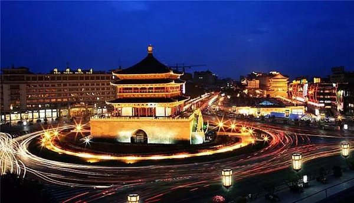
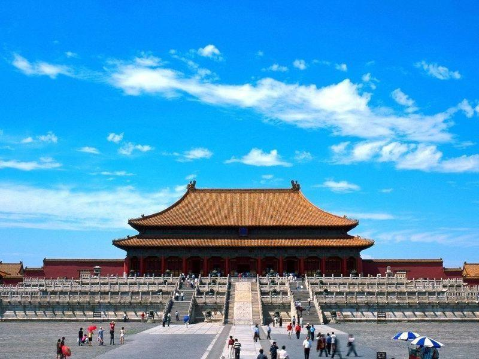
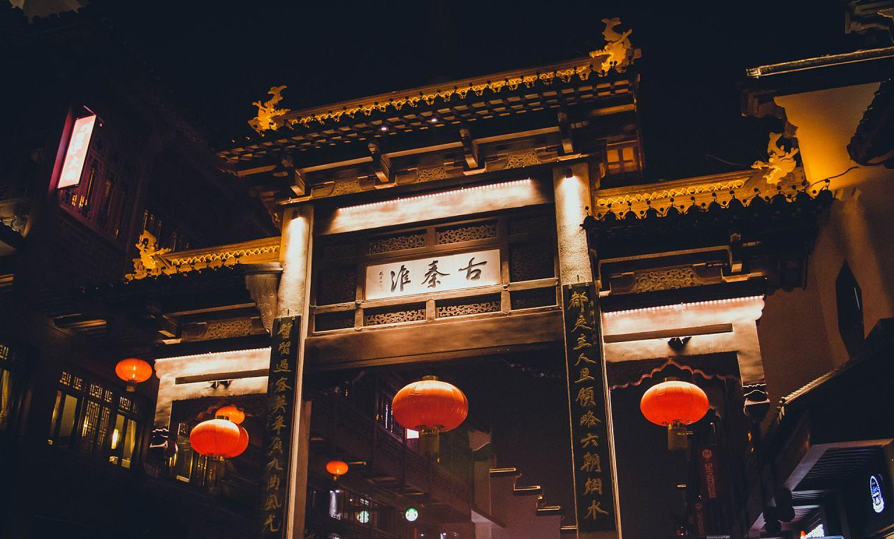

古都简介
返回
新中国成立前，学术界公认的“四大古都”有西安、北京、南京、洛阳。上世纪60年代，浙江大学著名教授陈桥驿先生提出两宋的都城开封和杭州也应被列入大古都行列，此建议后来得到学术界认可。1983年，《中国六大古都》一书正式出版，明确将杭州和开封列入“六大古都”。复旦大学著名教授谭其骧先生又建议将殷墟甲骨文的故乡、三国时期魏国都城邺城所在地安阳列为“大古都”行列；1988年，中国古都学会通过了“七大古都”的决议，安阳正式名列其中。2004年11月，中国古都学会认定郑州为八大古都之一；2010年，中国古都学会又将大同认定为九大古都之一，就有了“九大古都”之说。此次成都列入，全国便有了“十大古都”。
古都西安
西安是国务院公布的首批国家历史文化名城，有周、秦、汉、隋、唐等在内的13个朝代在此建都，是世界四大古都之一，中国古都学会认定的中国建都朝代最多的古都。曾经作为中国首都和政治、经济、文化中心长达1100多年。作为华夏文明的发源地，西安的历史非常悠久，历史文化的沉积非常厚重，是中华人民共和国国务院颁布的第一批国家历史文化名城。以西安为中心的关中人，将其独特的生活方式和民情风俗概括为关中十大怪。源于西安碑林中一块清代碑石的关中八景，又称长安八景，纪录了八处关中地区著名的文物风景胜地。

古都北京
北京，中国西周时成为周朝的诸侯国之一的燕国的都城。自中国金朝起成为古代中国首都——中都。自元朝起，开始成为全中国的首都。元朝国都，元大都，或称大都，由于中国皇帝忽必烈是蒙古大汗国的大汗，蒙古文称为“汗八里”（Khanbaliq），意为“大汗之居处”。元大都其城址位于今北京市市区，北至元大都城遗址，南至长安街，东西至二环路。明朝自成祖后开始对北京进行大规模扩建，清朝在延续明北京城的基础上又进行了一些修缮和扩建。至清末北京成为当时世界上最大的城市。北京有着3000余年的建城史和857余年的建都史。自秦汉以来北京地区一直是中国北方的军事和商业重镇，名称先后称为蓟城、燕都、燕京、涿郡、幽州、南京、中都、大都、京师、顺天府、北平、北京等。

古都洛阳
洛阳，简称“洛”，地处古洛水北岸而得名，有4000余年建城史和1529年建都史，自夏朝开始有13个王朝、105位帝王在此定鼎九州。河图洛书在此诞生，儒、释、道、玄、理肇始于此，丝绸之路与隋唐大运河在此交汇，邙山古墓群与天子驾六震惊世界，以洛阳为中心的河洛地区是中华文明的发源地，“中国”一词便源自洛阳，是中国历史上唯一被命名为“神都”的城市。洛阳是世界“四大圣城”之一，是我国著名的“四大古都”之一，是国务院首批公布的历史文化名城。以洛阳为中心的河洛地区是华夏文明的重要发祥地。中国古代伏羲、女娲、黄帝、唐尧、虞舜、夏禹等神话，多传于此。汉魏以后，洛阳逐渐成为国际大都市，隋唐时人口百万，仅次于首都长安的大都市，盛极一时。 洛阳在历史上相当长的时期内，曾经是我国政治、经济、文化的中心，亦是道路四通八达的交通枢纽。
古都南京
南京，别称金陵、江宁，中国四大古都之一，中国历史上的六大文化古都之一，1982年国务院公布的第一批中国历史文化名城，中华人民共和国江苏省省会。另依据中华民国的相关法律，南京至今仍为中华民国之正式首都，台北为临时首都。
南京自古是长江下游地区的文化和政治中心，也是扬子江下游流域重要的商业经济中心。南京是山、水、城、林一体的城市，有着丰富的自然景观和历史遗存。东郊汤山猿人头骨的出土，表明35万年前南京就是古人类聚居之地。公元前472年越王勾践灭吴后，在今天南京的中华门西南侧建城，开创了南京的城垣史，迄今已有2471年。公元3世纪以来，先后有东吴、东晋、和南朝的宋、齐、梁、陈（史称六朝）、以及南唐、明、太平天国、中华民国共10个朝代和政权在南京建都立国，留下了丰富的民族文化遗产。所以南京既被称为六朝古都，又被称为十朝都会。

古都开封
开封，简称汴，现为河南省省辖市，是我国七大古都和国务院首批公布的24座历史文化名城之一，处中华民族历史文化摇篮的黄河之滨，是一座历史文化悠久的古城。在中国的历史上，开封曾被称为大梁、汴梁、东京、汴京等。自建城至今已有2700多年的历史。战国时期的魏国，五代时期的后梁、后晋、后汉、后周以及北宋和金七个王朝曾先后建国都于开封，故称“七朝都会”。开封与中国的西安、洛阳、北京、南京、杭州、安阳并称七大古都，在国内外享有盛名。开封地理位置优越，气候温和，物产丰富，交通便利，文化教育发达，科技进步，经济繁荣，是中原地区的重要旅游城市和对外开放城市。开封是中原地区黄河沿线重要的旅游城市，2001年被国家旅游局命名为中国优秀旅游城市。悠久的历史，深厚的文化积淀，使开封享有七朝都会、文化名城、大宋故都、菊城之盛名。遍布市县的名胜古迹，依稀可寻的古城风貌，特色浓郁的民俗文化，绚丽多姿的秋菊，显示了古都的风韵和魅力。
古都杭州
杭州以其美丽的西湖山水著称于世，“上有天堂、下有苏杭”，表达了古往今来的人们对于这座美丽城市的由衷赞美。宋代大文豪苏东坡曾写道：“天下西湖三十六，就中最好是杭州”。西湖，她拥有三面云山，一水抱城的山光水色，她以“淡妆浓抹总相宜”的自然风光情系天下众生。
有着2200年的悠久历史的杭州还是我国七大古都之一，人文景观同样丰富多彩，古代庭、园、楼、阁、塔、寺、泉、壑、石窟、摩崖碑刻遍布，或珠帘玉带、烟柳画桥，或万千姿态、蔚然奇观，或山清水秀、风情万般，尤以灵隐寺、六和塔、飞来峰、岳王庙、西泠印社、龙井、虎跑泉等最为著名。“江南忆，最忆是杭州！
古都安阳
安阳是中国七大古都之一、国家级历史文化名城，是甲骨文的故乡、《周易》的发源地。公元前1300年商王盘庚迁都于殷（今安阳市郊小屯一带），经八代十二王，历时254年。中华民族最早使用的文字——甲骨文、世界上最大的青铜器——司母戊大方鼎在这里出土问世。在“中国20世纪100项考古大发现”评选中，安阳殷墟商代晚期都城遗址的发现与发掘名居榜首。另外，著名的大禹治水、文王演易、妇好请缨、苏秦拜相、西门豹治邺、岳母刺字等历史故事都发生在这里。安阳文物古迹较多，境内共有国家级文物保护单位8处，省级文物保护单位32处。悠久的历史，灿烂的文化，为安阳留下了宝贵的历史文化遗产，1952年11月毛主席视察安阳，对我们提出了殷切希望。1956年9月郭沫若先生留下了“洹水安阳名不虚，三千年前是帝都”的著名诗句。江泽民总书记也于1991年2月和1996年6月两次视察安阳，并亲笔题词：“弘扬民族文化，建好古都安阳”、“发扬自力更生艰苦创业的红旗渠精神”。
古都郑州
郑州是河南省省会，全省的政治、经济、文化中心。她偎依在黄河南岸，崇山峻岭之东，与七朝古都开封和九朝古都洛阳东西相临，是我国第八大古都，东南面向黄淮平原，位于东经112°42'～114°14'和北纬34°16'分～34°58'之间，属暖温带大陆性季风气候，年平均气温14.3℃，降雨量640毫米。辖12个县（市）、区，其中县1个、县级市5个、区6个。据2005年的统计资料，全市总面积7446.2平方公里，其中市区面积1010.3平方公里，建成区面积262平方公里；2005年末全市总人口 716万人，其中城镇人口424.1万人，乡村人口297.1万人。非农业人口257.6万人。郑州地处中原腹地，为全国重要的交通枢纽，是新亚欧大陆桥上的重要城市，是国家开放城市和第三批历史文化名城。
古都大同
大同有2300年的建城史是国务院首批公布的历史文化名城，远在10万年前我们的祖先许家窑人就在大同这块土地上劳动繁衍生息。大同自古就为北方少数所占两晋南北朝之际是我国北方各民族大动乱、大迁移的年代。此时的大同，却因此而繁荣昌盛起来。春秋时期以为代国南郡，北魏为鲜卑族拓跋部所建。该部原先生活在长城以北，后来逐步向长城以南发展，公元398年，道武帝拓跋（王圭）定都平城从此中国历史进入了南北朝对峙时期。此时大同是我国北方的政治、经济、军事、文化的中心，也是各族人民交流的中心和中国北方的佛教中心。五代，辽、金、时期大同开始称作云州，并成为辽，金，元初西京（陪都）。这时的大同已成为我国北方发达的地区，而且也是一个多民族聚居的重要城市。也给我们留下了重多文物。
古都成都
成都是国家历史文化名城，古蜀文明发祥地。境内金沙遗址有3000年历史，周太王以“一年成邑，二年成都”，故名成都；先后有7个割据政权在此建都；一直是各朝代的州郡治所；汉为全国五大都会之一；唐为中国最发达工商业城市之一，史称“扬一益二”；北宋是汴京外第二大都会，发明世界上第一种纸币交子。拥有都江堰、武侯祠、杜甫草堂等名胜古迹，是中国优秀旅游城市。